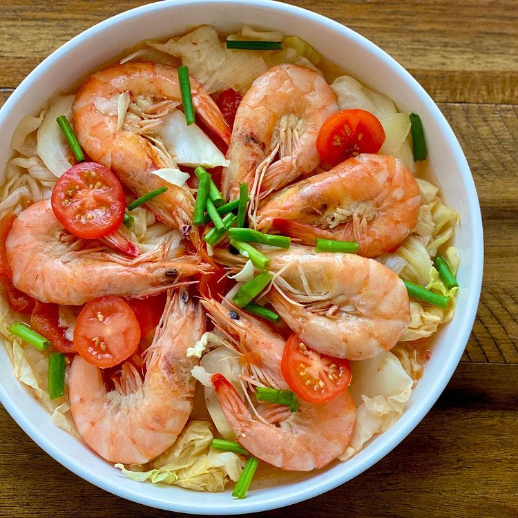

Home

Sinigang
Description
Sinigang is a Filipino soup or stew characterized by its sour and savory flavor most often associated
with tamarind. It is often associated with tamarind or other souring ingredients such as guava, unripe mango,
calamansi, or santol. It is one of the popular viands in Philippine cuisine and is best served with steamed
rice.
Ingredients
- 2 pounds pork belly, cut into serving pieces
- 1/4 cup fish sauce
- 1 onion, peeled and quartered
- 2 medium-sized tomatoes, chopped
- 2 cups water
- 1/2 pound radish, peeled and sliced
- 1/2 pound eggplant, sliced
- 1/2 pound okra
- 1/2 pound string beans, cut into 2-inch lengths
- 3 pieces long green chili
- 1 pack sinigang mix
Steps
- In a pot over medium heat, combine pork, fish sauce, and enough water to cover. Bring to a boil for about 5
to 7 minutes. Remove from heat and drain well.
- Rinse pork with cold water and drain well.
- Return pork to the pot and add onions, tomatoes, and water. Bring to a boil for about 5 to 7 minutes or
until meat is tender.
- Add radish and cook for about 3 to 5 minutes or until tender.
- Add eggplants and cook for about 2 to 3 minutes or until tender.
- Add okra and cook for about 1 to 2 minutes or until tender.